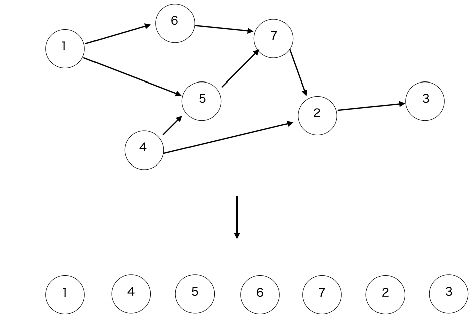

閉路のない有向グラフ \(G\) のトポロジカルソートとは、以下順序で頂点を並べた列を作ることです。

DAG 上で有向辺の 順/逆順 に DP したい場合などに役立ちます。
ただし、トポロジカルソートした数列で、u が v より前に現れても、必ずしもグラフ上で u から v に到達可能ではないです
実装も簡単で、頂点 \(x\) に入ってくる辺の本数を \(\mathrm{indegree}[x]\) とし、トポロジカル順で頂点を並べる数列を \(A\) とし、以下の手順を繰り返します。
最終的に得られる \(A\) がトポロジカルソートされた結果です。
このアルゴリズムは、\(G\) にサイクルがある場合にうまくいかないので、\(G\) が DAG かどうかの判定にも使うことができます。
\(G\) が DAG でない場合、トポロジカルソートされた配列 \(A\) のサイズと、頂点数が一致しないので、そこで判別します。
以下はコード例で、verifyはこちらです。